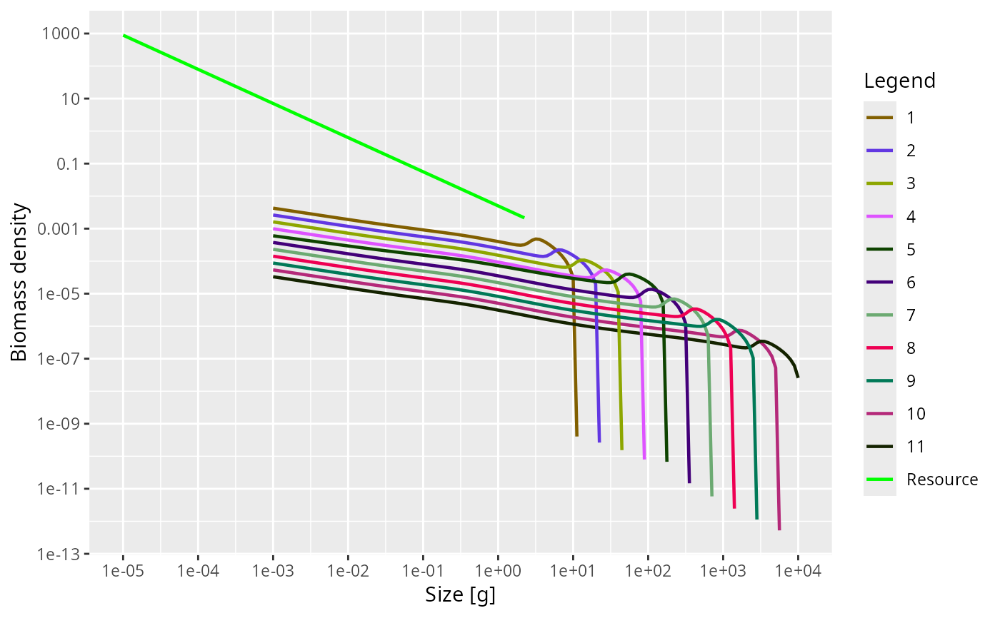

Tune a model so that the state it is in becomes a steady state
Source:R/steadyState.R
tuneSteadyState.Rd![[Experimental]](figures/lifecycle-experimental.svg)
Solves for the consumer size spectra while holding the reproduction rate
(RDD), the resource and any other components at the values stored in
params, and then adjusts the parameters that generate those held values so
that they are steady too. This is the function to use while setting up and
calibrating a model: holding the inputs to the fish dynamics fixed is what
makes the search reliable.
Usage
tuneSteadyState(
params,
solver = c("project", "newton"),
effort = params@initial_effort,
preserve = c("reproduction_level", "erepro", "R_max"),
info_level = default_info_level(),
...
)Arguments
- params
A MizerParams object
- solver
The solver to use:
"project"to run the dynamics until they settle,"newton"to solve the steady-state equation directly. See Choosing a solver.- effort
The fishing effort to use throughout. By default the initial effort stored in
params.- preserve
-
Specifies whether the
reproduction_levelshould be preserved (default) or the maximum reproduction rateR_maxor the reproductive efficiencyerepro. SeesetBevertonHolt()for an explanation of thereproduction_level. - info_level
Controls the amount of information messages that are shown. Higher levels lead to more messages,
info_level = 0gives silence. The default is taken from themizer_info_leveloption, seedefault_info_level().- ...
Arguments for the chosen solver.
With
solver = "project":t_max,t_per,dt,t_save,distance_tol,residual_tol,amplitude_tol,amp_rel_tol,extinction_threshold,progress_barandmethod, all as described inprojectUntilSettled(). Note thatdistance_tolhere defaults to0.1 * dtand measures the largest relative change in egg production, because the distance function isdistanceMaxRelRDI().residual_tolis judged on the model as the search sees it, with reproduction, the resource and the other components pinned; the residual reported in the result is measured again on the model that is actually returned.With
solver = "newton":solver_tol(default1e-6), a tolerance on the per-capita rate of change passed tonleqslv::nleqslv(). It was calledresidual_tolbefore mizer 3.3, a name that now belongs to the biomass drift criterion above;maxit(default200);jacobian, either"update"(default, the Jacobian is computed once and then updated cheaply each iteration —nleqslv's"Broyden") or"recompute"(a numerical Jacobian at every iteration —nleqslv's"Newton");global, the globalisation strategy (default"dbldog", a robust double-dogleg trust region); andverboseto trace the iterations.
Value
A MizerParams object with the initial state replaced by the steady
state found, and with erepro/R_max and cc_pp adjusted as described
above. It carries a "convergence" attribute describing the solution
found; see projectUntilSettled(). Check it: convergence is not
guaranteed.
Details
Concretely, three things are held fixed during the search and two parameters are re-derived afterwards:
The reproduction rate is pinned at
getRDD(params). Afterwards, if the model uses Beverton-Holt reproduction,setBevertonHolt()restores the density dependence so that it reproduces exactly that rate at the new spectra. Usepreserveto say which of the reproduction parameters should be kept as it was.The resource abundance is held at
initialNResource(params). Afterwards the resource capacitycc_ppis recomputed so that this abundance is a steady state of the resource under the new spectra. If the capacity had been set by hand (frozen), it is rebalanced and thereby unfrozen.Other components are held constant throughout and are not adjusted.
So the model you get back is at a fixed point of the full dynamics, with
reproduction and the resource free, and getStability() can be applied to it
directly. Contrast findSteadyState(), which changes no parameter and
instead lets the reproduction rate and the resource move to wherever the
parameters you already have put them.
Holding those inputs fixed is what makes the search reliable, but it does not
make the result certain: the state that is stored is only as close to a fixed
point as the solver's tolerance allowed, and with solver = "project" the
run may instead have stopped on a limit cycle or on a species going extinct.
Check the result rather than assuming it; see the section below.
Choosing a solver
solver = "project" (the default) runs the dynamics until they settle, via
projectUntilSettled(), using distanceMaxRelRDI() as its distance
function. It needs no extra packages and works with any resource dynamics.
solver = "newton" solves the steady-state equation directly with a
Newton-type root finder from the nleqslv package. It converges even when
the steady state is dynamically unstable, where the time-stepping solver
cannot, and it discovers the support of the steady state automatically. It
starts from the spectra in initialN(params), so a reasonable initial guess
still matters — for example the spectra from a nearby stable
parameterisation, or the (diverging) output of solver = "project".
Because the resource is held fixed either way, solver = "newton" here does
not need the resource to be a semichemostat, unlike in findSteadyState()
where the resource is one of the unknowns.
What you get back may not be a steady state
The stopping criterion is a proxy. It says that two states t_per years
apart differ by less than distance_tol on whatever scale the criterion is
measured on; it does not say that the state reached is a fixed point. There
are four ways the returned object can fail to be one:
the run converged on its own scale while the biomasses are still visibly drifting (
termination = "distance_tolerance");the run reached
t_maxwithout converging (termination = "time_limit");the run settled on a limit cycle (
termination = "cycle_detected"), in which case the state stored is one point on that cycle;the run stopped because a species was going extinct (
termination = "extinction").
So treat the result as a claim to be checked rather than as a guarantee:
attr(params, "convergence")$attractor # "fixed_point", "limit_cycle" or NA
attr(params, "convergence")$residual # largest biomass drift, in 1/year
isSteady(params) # TRUE if within tolerance
summary(params) # includes the biomass-drift verdict
plot(getSteadyResidual(params)) # which species, and at which sizesattractor is the field that answers the question: it is "fixed_point"
only where the measured biomass drift is within residual_tol, so it
cannot be satisfied by a distance function that has merely gone quiet.
termination says how the run ended and converged whether the solver met
its own criterion; neither is a claim about the state. The last line says
where the model is not steady, which is the one to reach for when it is
not: a model that is off steady state is usually off in one species or one
part of the size range, and the plot names it. See getSteadyResidual()
for why the verdict is phrased in terms of biomass drift rather than the
largest per-capita rate.
The messages this function prints say the same thing — a converged run
whose biomasses are still moving reports the drift and adds "Reduce the
tolerance on the distance function to converge further." — but they are
suppressed by info_level = 0, so in a script the "convergence"
attribute is the reliable check.
Finally, a genuine fixed point need not be a stable one. Use
getStability() to find out, and solver = "newton" to converge onto a
fixed point that the dynamics themselves would run away from.
Examples
# \donttest{
params <- newTraitParams()
species_params(params)$gamma[5] <- 3000
params <- tuneSteadyState(params)
#> Reached the convergence tolerance after 12 years. The biomasses change at up to 0.0025 per year.
plotSpectra(params)

# }